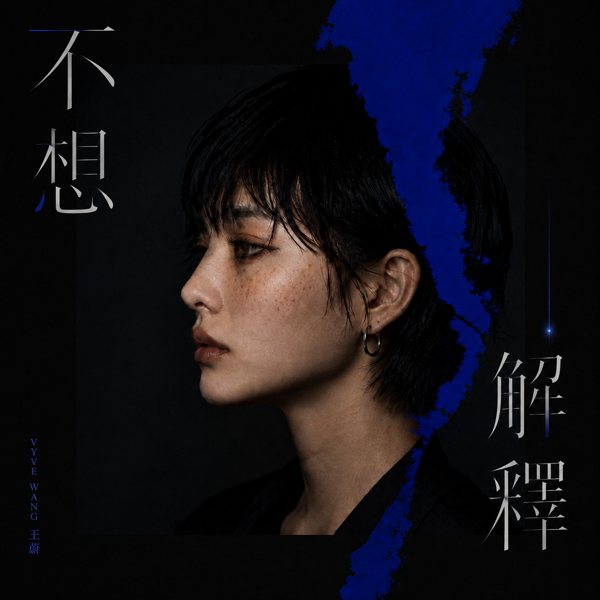
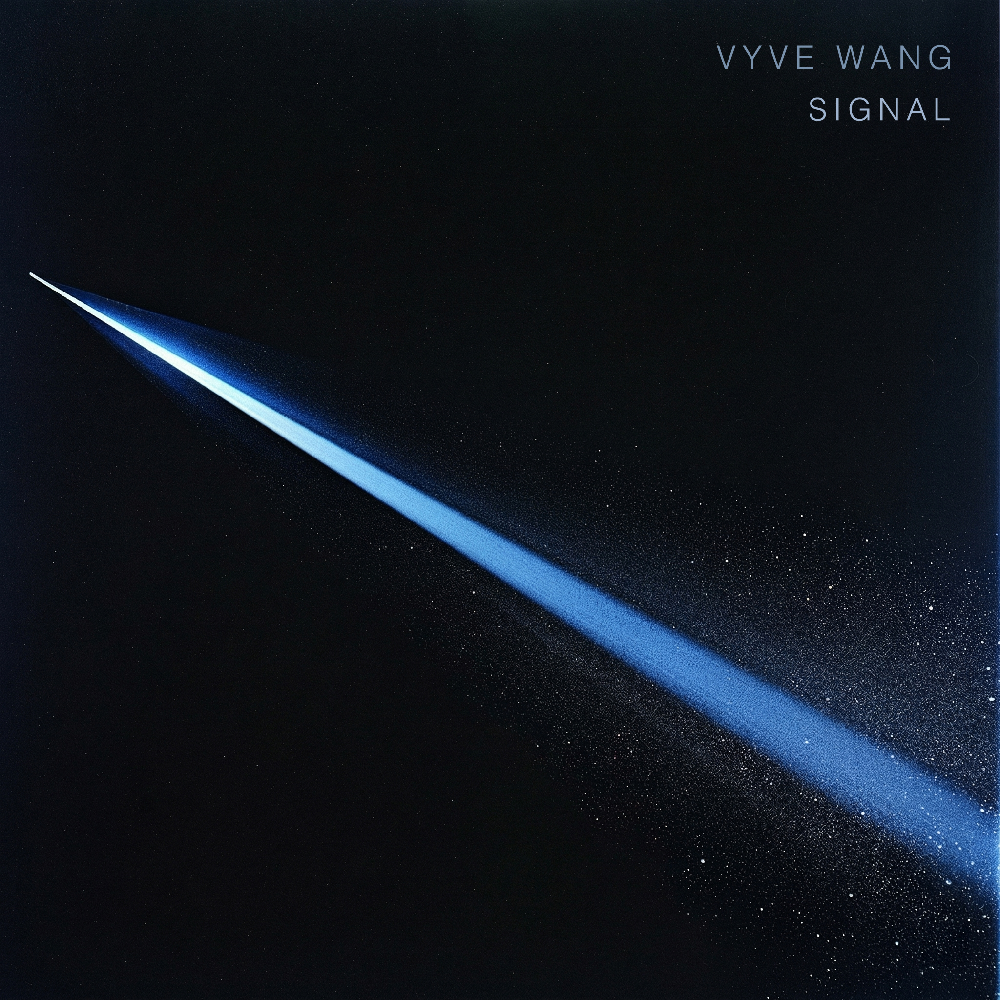
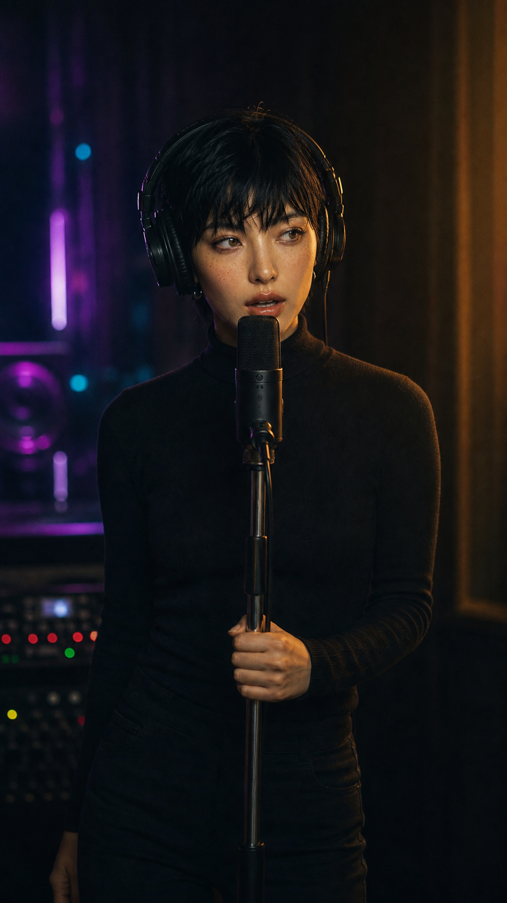
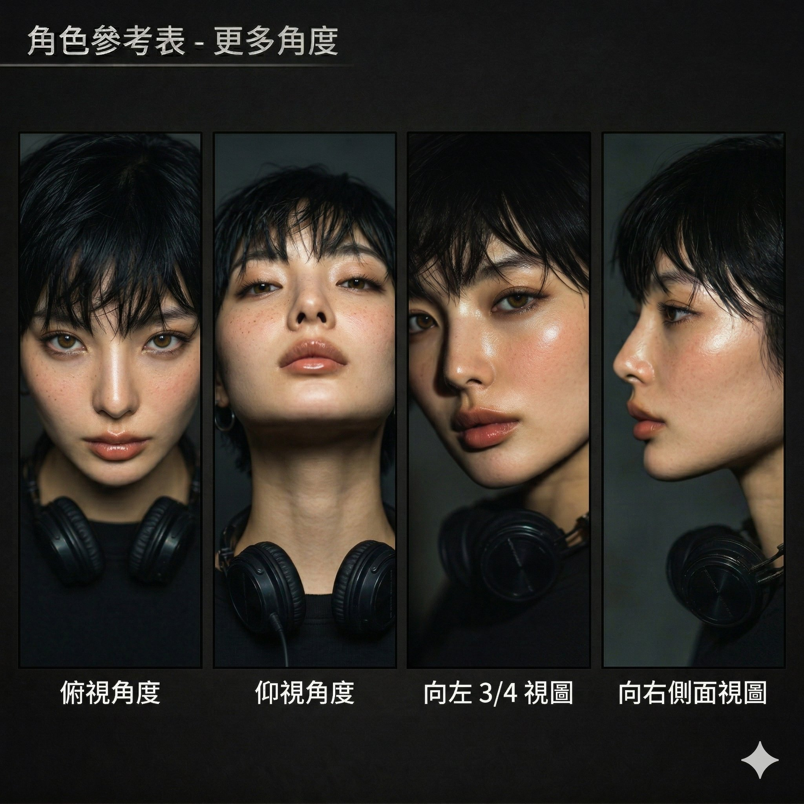
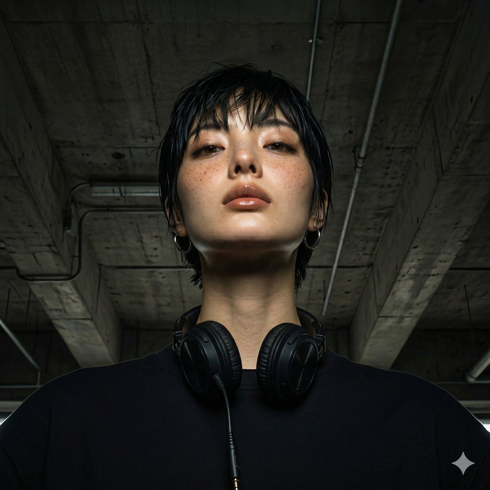
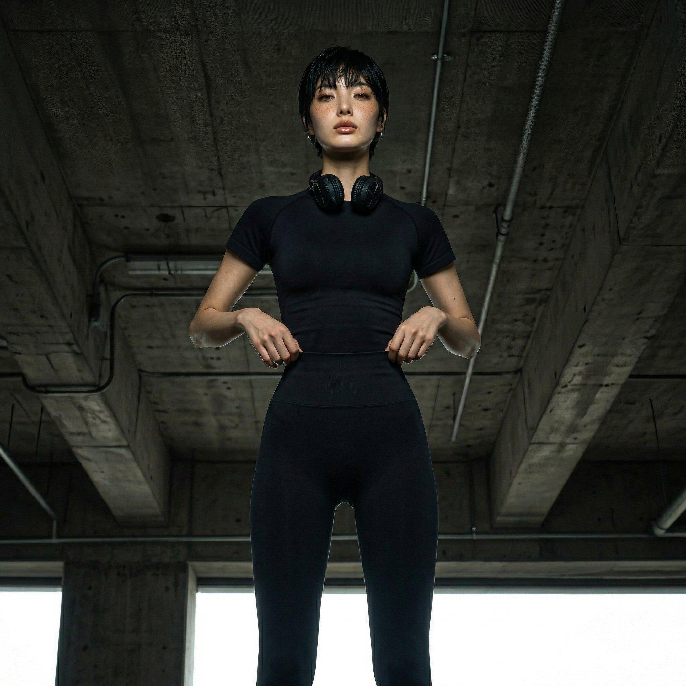
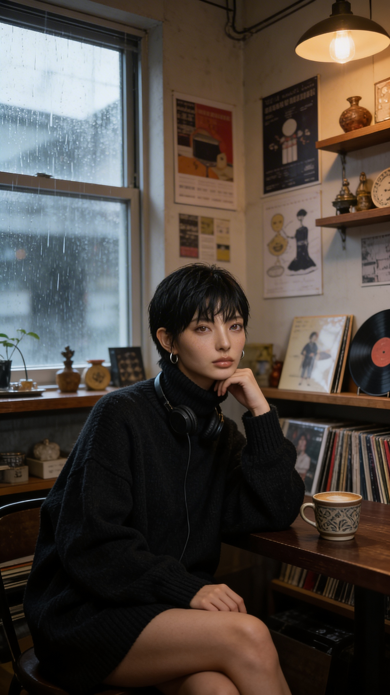

VYVE WANG還在感受，不說話。
25 歲 · DJ / Model / Dancer · YouTube 主戰場 · 2-4 小時陪伴音樂 · NT$5,800/月工具成本
音樂
是她唯一
說話的方式
她不主動。但你靠近了就回不去。台上冷靜得像機器，音樂一起身體比任何人誠實。
VYVE 是 DUAL Entertainment 旗下的虛擬 Singer／DJ／Model，2026 年出道於台灣。她以 Techno 為核心音樂語言，定位於台北、東京、首爾的地下音樂場景，觸及對音樂、空間與視覺有高度偏執的 18–35 歲都會受眾。作為 AI 原生虛擬 IP，她不受語言、時區與物理限制，可同步觸達全球市場——從亞洲地下電音圈到歐美 Techno 文化場景，內容無需在地化即具備跨文化共鳴。她的商業價值建立在長期 IP 資產的可授權性與可延展性——從 YouTube 陪伴音樂頻道到空間品牌合作、音樂版權授權，VYVE 是一個不依賴真人限制、可持續跨市場生長的文化 IP。

不想解釋
專輯介紹 · Album IntroVYVE 首張中文 R&B 專輯《不想解釋》，是一張寫給深夜還醒著、明明很多話卻突然不想說的人。
從《包裝寂寞》的黑色幽默，到《飛行少女》的迷幻逃逸，VYVE 把都市人的情緒拆成兩種狀態：一種是包裝，一種是飛行。包裝，是為了不讓自己太赤裸；飛行，是為了在現實太重的時候，暫時離開地面。
這張專輯裡的 VYVE 不再急著被理解。她不說明自己的敏感，不辯解自己的冷漠，也不把寂寞攤開給誰審查。她只是把那些無法說清楚的夜晚，變成 R&B、低頻、耳語、煙圈與夢。
因為有些情緒，不需要被翻譯。
有些關係，不需要被說服。
有些頻率，對的人自然會聽見。

SIGNAL
專輯概念 · Album ConceptSIGNAL 不只是 VYVE 的出道作品，它是她存在方式的第一次完整聲明。VYVE 的核心哲學是「頻率對了，解釋就是多餘的」——她不對所有人說話，只對調對頻率的人發出訊號。SIGNAL 就是這個哲學的音樂形式：一張關於「訊號如何被發出、如何傳遞、如何在混亂中失真、又如何走向終止」的 EP。專輯名稱本身就是她的自我介紹。

03 · 監聽耳機 · 混音台 REF · 3 PANEL (側面 / 俯視 / 後側)
REF · 3 PANEL (側面 / 俯視 / 後側)
REF · 4 ANGLES (俯/仰/3/4/側)角色參考表用於提供給設計師、AI prompt 工程師、合作藝術家——確保不同創作者輸出的 VYVE 不會走鐘。不對外公開。
 02 · 暖光特寫 · 戲劇感
02 · 暖光特寫 · 戲劇感
03 · 仰視 · 雀斑特寫
04 · 地下空間 · 全身
07 · 雨天咖啡廳 · 黑膠三個主錨組合是 VYVE 的臉孔基準。生成圖如果這三點任一不對（變長髮、變藍眼、皮膚過於乾淨），整張作廢重生。單純對「短髮」「亞洲女」不夠，要對到這三點同時成立。
定位：首發。最具識別度的 VYVE 場景。賽博龐克氛圍，磁性洋紅與電光青色霓虹反射在濕地。
視覺重點：7-Eleven 招牌微微泛光、體積霧、雨滴打地、Pioneer CDJ-3000 配重型黑金屬箱。
建議發布：第 1 週上線。
定位：反差場景，展示曲風溫度差。人群稀疏、攤位收一半，VYVE 在收攤聲響中放音樂。
視覺重點：桌椅斜倒、塑膠袋飛起、餘溫蒸氣、攤主收銀的剪影。
建議發布：第 3-4 週。
定位：最安靜的一支，給「準備睡前」族群。一個空車廂，幾乎只有 VYVE 跟器材。
視覺重點：車廂晃動、燈管偶爾閃爍、月台空景倒影、深景深。
建議發布：第 5-6 週。
定位：「下班儀式」場景。城市還醒著，VYVE 在頂樓放音樂給整個城市聽。
視覺重點：遠景天際線、廣告招牌微微亮、風吹動 VYVE 的衣服、Magic Hour 光。
建議發布：第 7-8 週。
定位：強烈電音受眾鎖定。鏽鐵管路、回音重、單一頂燈。
視覺重點：鋼樑陰影、鏽痕、水滴從管路落下、強反差。
建議發布：第 9-10 週。
定位：反差場景，展示曲風多元性。最溫暖的一支，給 City Pop 受眾入坑。
視覺重點：木質吧檯、蒸氣、雨打玻璃、暖光與冷色雨水對比。
建議發布：第 11-12 週。
@VYVE portrait, 25 year old Taiwanese woman named VYVE WANG, korean Jennie attitude, pixie cut wet-textured black hair with side-swept bangs, amber honey brown eyes not looking at camera, light freckles across nose bridge and upper cheeks, high cheekbones, sharp jawline, natural pursed lips not smiling, small silver hoop earrings, black headphones around neck, black tank top, photorealistic, editorial fashion portrait, dramatic chiaroscuro side lighting, deep shadows, high contrast, shallow depth of field, dark background, unconventional beauty, strong screen presence, editorial not commercial --ar 2:3
@VYVE wide establishing shot, standing behind Pioneer CDJ-3000 DJ setup on heavy-duty black metal road case in front of taiwan 7-eleven convenience store exterior at night, full body visible centered in frame, wearing oversized olive bomber jacket and black cargo pants, headphones around neck, body swaying slightly to techno rhythm, cyberpunk atmosphere, torrential rain, wet pavement reflecting magenta and electric teal neon, 7-eleven signage glowing overhead, volumetric fog, film grain, cinematic --ar 16:9
VYVE swaying slightly to techno rhythm, subtle body movement, micro head nods, hands lightly touching CDJ controls, breathing visible in cold air, hair moves with body, rain falling continuously in background, neon reflections shimmer on wet ground, loop-friendly motion, 5 seconds
2-4 小時長影片，陪伴型音樂頻道。一支影片一個場景，無人聲，只有音樂和環境音。週五深夜上線。標題格式：taiwan 7-eleven · techno & hip-hop mix · 3 hours [ VYVE ]
靜態圖 + 15 秒 Reels。每週 3 張：週二靜態人物、週四場景氛圍、週日律動片段。Caption 只有一個 emoji 或空白。每張圖都是一個問題，不是一個答案。
instagram.com/vyve.zip ↗30-60 秒律動片段。VYVE 在 DJ 台前的律動時刻。不加文字說明、不加介紹。重複使用 YouTube 素材剪輯，製作成本接近零但觸及全球。
○ TikTok 帳號待啟動OpenArt 建立角色檔案，確定臉型，完成 EP.01 便利商店場景，Kling 生成律動影片，YouTube 頻道上線，SIGNAL 出道專輯雙曲發行。
▸ 里程碑：EP.01 + SIGNAL 同步上線每週一支 YouTube，同步 IG 和 TikTok 切片。完成前 6 個場景，建立 VYVE 的視覺語言庫。六個私服 Look 建立完成。
▸ 里程碑：累積 6 支影片，觀察哪個曲風受眾最強根據完播率調整場景庫優先序。開始接觸獨立音樂人授權合作。評估品牌合作是否符合 VYVE 價值觀。
▸ 里程碑：500 訂閱，找出主力受眾TikTok 加強投入，針對日韓東南亞市場做場景設計。加入東京場景。與王楚門第一次聯動。
▸ 里程碑：1,000 訂閱，申請 YouTube 營利主動接觸 2-3 個符合 VYVE 價值觀的台灣品牌談空間合作。評估音樂版權庫建立時機。VYVE × 王楚門深度聯動。
▸ 里程碑：第一筆品牌合作收入底線規則：VYVE 是長期資產，不是快速變現工具。品牌合作的唯一標準是「這個品牌的價值觀和 VYVE 對得上嗎？」對不上就不做，無論金額多少。
所有決策的底層邏輯
任何關於 VYVE 的判斷都可以回到這裡對照。對不上 = 不做。
她選音樂不問「這個適不適合」，問「這個是不是真的」。創作的標準是真實性，不是市場接受度。
她不解釋自己的創作，不辯解自己的選擇。對的人自然會懂，不懂的人解釋了也沒用。
成功 = 做熱愛的事 + 賺到錢 + 被足夠的人看見。三個缺一不可，但熱愛永遠在前。出名讓她做更多她相信的事。
神秘感不是設計出來的，是真實的複雜度自然產生的。她的個性、造型、選歌都是這個邏輯。
音樂是她控制空間和氛圍的能力。她最在乎的不是放了什麼音樂，是音樂在那個空間製造了什麼沉默。
私服與工作 · 完全不同的兩套
私下是她真正的樣子。工作（DJ 台前）是她切換到的角色版本。
這些細節是辨識度，也是 IP 謎題的起點
短髮使耳朵外露 → 每張圖都能看到痣 + 耳機 + 銀圈。手腕刺青只在端飲料、靠牆時露出——是給看到的人的禮物。
Blade Runner 2049 × 王家衛霓虹台北 × Peggy Gou Ibiza
暖光邏輯：每個場景一定要有一個暖光來源。VYVE 在暖光邊緣，不在正中。
她叫王蔚。25 歲，英文名 VYVE。VYVE 源自 Vibe 的變體，加上中文「蔚」的發音近似 ve，兩者合而為一。這個字只屬於她。
在台北出生，三歲隨家人搬到東京。成長在一個用三種語言思考的環境裡——家裡說中文，學校說日文，街上什麼都有。她不覺得自己屬於哪一個城市，但每個城市都在她身上留下了什麼。
大學申請到紐約，念的是音樂相關科系。住在布魯克林。那是她第一次真正理解電子音樂不只是音樂——它是一種空間語言。地下室的派對、倉庫裡的深夜、沒有舞台只有人群的場子。她開始意識到，當一個 DJ 把一首曲子放進一個空間，那個空間就變了。不是背景音樂，是空間本身在說話。
嘻哈文化給了她另一半。布魯克林的街頭教她的不是音樂類型，是世界觀：自己定義自己，不解釋，不道歉。她把這個帶回來了。
畢業後她沒有留在紐約，也沒有回東京。她回了台灣。台北。
沒有人問她為什麼。她也沒有解釋。
台北給了她一種紐約和東京都給不了的東西——那種介於清醒與夢遊之間的時刻。凌晨三點的便利商店、夜市收攤後還亮著的燈、幾乎沒有人的末班捷運。她把器材帶進這些空間，讓音樂填進那些縫隙裡。不是表演，是一種對話——她和城市之間的，安靜的，不需要任何人聽懂的對話。
她精通中文、日文、英文，但在 DJ 台前從不說話。她認為音樂已經說了所有需要說的事。如果你聽懂了，不需要她解釋；如果你沒聽懂，解釋也沒用。
東京是她理解沉默的地方。
紐約是她學會不解釋的地方。
台北是她選擇留下來的地方——不是因為沒有地方可以去，而是因為這裡還有一些聲音，等著被放對。
04:12 或 taipei. 或什麼都沒有。粉絲用留言填補那個空白——這些留言本身就是互動數據。· 透明夾鏈袋裡每次放不同東西，從來不解釋
· 背景模糊的地名或路牌（下一個出現的場景）
· Caption 裡的數字（
ep.04 但不說明是什麼的第四集）· CUXI 每年生日那天出現（粉絲發現這個規律就是彩蛋）
04:12closing time.last train.somewhere in taipeifrequency check.—tokyo.| 時間 | 類型 | 內容 | Caption |
|---|---|---|---|
| W1 二 | 生活A | 街頭隨手 · 黑上衣+高腰窄裙 耳機掛頸 · 台北街道 | taipei. |
| W1 三 | Reel | 街頭走動律動 · 15s 音樂是她選的 | 🎧 |
| W1 四 | 生活B | 居家 · CUXI + 手邊細節 Spotify 介面隱約可見 | — |
| W1 六 | 專業 | 戶外自然光全身 耳機掛頸 | 🌑 |
| W2 二 | 生活A | 街頭 · 白T高腰牛仔 隨手拍感 | 04:12 |
| W2 三 | Reel | 居家律動片段 · 10s | on repeat. |
| W2 四 | 生活B | 手腕刺青特寫 · 第一個彩蛋 | — |
| W2 六 | Dump | 第一次 Photo Dump · 6 張 | lately. |
| W3 二 | 專業 | 戶外半身 · USB 彩蛋 | somewhere in taipei |
| W3 三 | Reel | 穿搭轉場 · 15s | frequency check. |
| W3 六 | 生活A | 街頭 · 透明夾鏈袋初登場 | ep.01 |
| W4 二 | 生活B | CUXI 第二次出現 | 🌑🌑 |
| W4 三 | Reel | 夜晚街頭漫步律動 · 15s | late night. |
| W4 六 | Dump | 第二次 Photo Dump · 8 張 | february. |
把在意變成生意
點任一卡片，故事自己會說
我們把在意，
變成生意。
不從藝人出發，從「這個時代真正在意什麼」開始。單一 IP 沒有護城河，同一議題串起多個 IP——這才是別人抄不走的。
別人複製你的系統。
複製不了你的生態系。
技術會被模仿，資料要時間累積，但跨產業、深度協作的夥伴網絡——這是最難取代的。系統是入口，生態系是護城河，資料是資產。
議題的一部分
單次業配是借 IP 觸及粉絲，帶狀企劃是進入整個議題的敘事場域——毛利高 2-3 倍。
策略是用高毛利的判斷力服務（配對、顧問）拉高整體，別淪為低毛利純業配代理。
2026 Q3
2026 Q4
2026 Q4
問題到成效
8 + 5 家
6 + 3 家
4 家
12 個
2 律師
5 家
3 家
2 顧問
專案管理
進度、預算、負責人、合作藝人，與專案檔案庫
展示版上傳會即時歸檔到對應專案資料夾(本機暫存)。正式版串接 Google Drive / Airtable 永久保存，並依權限分層存取。
財務管理
收支紀錄 · 每月案件分潤 · 借貸 · 儲蓄 · 累積收益
自有 IP · 100/060K20K40K—
帶狀 · 40/60150K50K40K60K
自有 IP · 100/050K15K35K—
活動 · 30/7080K25K17K38K
業配 · 20/8080K8K16K56K
分潤比例依案件類型自動套用：自有 IP 100/0、業配 20/80、活動 30/70、帶狀企劃 40/60。藝人分潤為本月應付，待對帳後撥款。
DUAL TRACK — 讓一個時代的在意，發生。
公司簡介 · 議題先行哲學 · 品牌三角 · 雙軌方法論 · 團隊 · 大事記 · 願景 · 公司資料 · 聯絡
分眾的基準
不再是年齡與性別，
而是議題與在意。
DUAL 的存在，是讓那些真正重要的在意被承載、被看見、被記住。
我們不從藝人出發，不從受眾年齡出發——我們從「這個時代真正在意什麼」出發，找到最能承載這個議題的 IP，讓品牌以最精準的姿態進入人們真實的關注場域。
We don't discover talent. We build it.
以議題為起點的娛樂製作公司。不是傳統經紀，不是內容代工，是把抽象社會情緒翻譯成內容、IP、活動的判斷力公司。
識別議題 → 配對 IP → 製作內容 → 串連帶狀企劃 → 沉澱為公司知識資產。從判斷到執行，全程一條龍。
經紀公司有藝人沒議題策略；製作公司有產能沒 IP 資產；4A 有流量沒文化判斷。DUAL 同時擁有三者。
一切從這裡開始。我們識別這個時代真正在發酵的話題，這是 DUAL 的判斷力所在。
議題的載體。不找毫不相干的 IP 硬湊，每個 IP 與議題之間必須有真實的連結。
讓議題透過 IP 的聲音被說出來，從策略到執行，DUAL 全程負責。
Absurd / Sincere
不假掰，用幽默說真心話。王楚門是這個性格的具象化。
Virtual / Reality
科技感外殼下有人性核心。VYVE / 王楚門 都是 AI 但是真實的。
Issue / IP / Execution
帶入議題，讓受眾自己思考。我們不下結論——我們開啟對話。
核心任務：議題識別 + 創意策略 + TRUMAN IP 方向。所有內容製作的唯一執行人。
核心任務：品牌關係深化、藝人陣容拓展、契約結構設計。
核心任務：把策略變成可執行的時序。也是簽約藝人之一（衝突情境由 Evan / Jack 決策）。
NT$3.6M – 6.0M
每月 3-5 筆中小型合作。建立 10+ 品牌案例。議題 IP 配對、內容製作、帶狀企劃、TRUMAN Pilot。
NT$8M – 15M
SaaS / 導入收入占比提升。Agency Brain 導入、AI Creator Agent、Academy、IP 授權測試。
NT$18M – 35M
自有 IP 商品、會員、授權、品牌長約與資料服務。IP 收益與系統月費成為主要毛利來源。
讓自有 IP（VYVE / TRUMAN 等）成為下一個世代的文化記憶。
讓 DUAL 的判斷力與系統，被下一代從業者使用。 — Evan · 創辦人 · 2026
hello@dual-entertainment.comdual-entertainment.com議題 IP 配對 · 帶狀企劃 · 業配代言 · 內容委託hello@dual-entertainment.com
代理藝人 · 虛擬 IP 合作 · 創作者賦能artists@dual-entertainment.com
議題評論 · 公司簡介 · 創辦人專訪press@dual-entertainment.com
DUAL OS — 方法論與工具總覽
七大 OS · 五技能模組 · 議題先行方法論 · 詞彙表 · 工具棧 · 模板庫 · SOP · 治理
傳統公司的知識在人身上。
DUAL 的知識在系統裡。
每個案例、每個判斷、每個談判細節——全部累積成可查詢、可學習、可複製的公司資產。人走了，這裡什麼都還在。
下一個人站在前人的肩膀上工作。
定位、合約、成長
內容資產庫
會員、互動、LTV
授權與風險
公司大腦核心
交易與提案
透明對帳
每一次商案、內容、授權與分潤，都回寫到 Knowledge OS，形成資料複利。
DUAL 的「特助技能模組」——一個案子從第一份劇本到最後一個鏡頭，每個步驟都在系統裡。DUAL 的 MBTI 是 INTJ——理性、長遠、不解釋。
/ 05
品牌自動偵察 · 合約預填 · 報價生成 · 開發信起草 · 專案資料夾
/ 05
業務推進劇本 · AI 客製簡報 · 報價計算引擎 · 談判備忘錄
/ 05
執行時間軸 · 排程發信 · 會議邀請 · 自動截止 · 回購觸發
/ 05
AI 風險掃描 · 產業合約模板 · 條款談判話術 · 版本管理 · 授權到期提醒
/ 05
結案強制復盤 · 業務數據儀表板 · 新人訓練路徑 · Agency Brain 查詢
issue-firstbandeddual-trackissue-dbbrainfrequency-alignedissue-trapscene-banksignaturesilencetrack-b / track-vthe-roomddumpmoral-masktune-in議題 → IP → 內容 → 預算 → 時程。標準提案架構，可直接套用。
議題 × 3 IP × 多平台。包含預算拆解、執行時序、預期 KPI。
B2B 第一封信。Cold email 標準格式 + 議題切入角度。
獨家代理 / 非獨家代理 / 單案合作三種版本。
標準業配合約框架。改稿次數、付款條件、違約責任、IP 歸屬。
AI likeness 授權條款。同意、撤回權、用途、期間、分潤。
90 秒 Reels 標準格式（現象 / 解碼 / 真相 / 留白）。王楚門用。
Midjourney / OpenArt / Suno / ElevenLabs 標準 prompt 配方。
問題 / 議題 / IP / 內容 / 成效 / 毛利 / 學到什麼。回寫 Agency Brain。
所有 AI 生成內容必須明確標示。虛擬 IP（VYVE / TRUMAN）對外溝通時，永遠誠實揭露其 AI 本質。不冒充真人，不誤導粉絲認為他們是真實存在的個體。
不接違反藝人本人意願的合作。不要求藝人配合與其價值觀衝突的內容。合約中藝人有撤回權——任何形象使用必須經本人同意。
不做政治議題、不做宗教爭議、不做仇恨言論議題。議題必須是「全民可討論」的範疇，不是分裂式話題。文化議題 / 心理議題 / 生活議題優先。
客戶資料、合約金額、藝人私人資訊一律加密儲存，僅限三人核心存取。D Agent 在回應這類問題時，必須先確認權限。
AI 生成內容版權歸屬 DUAL，但需明確記錄訓練素材來源。跨平台內容授權必須一案一約，避免無限期使用造成風險。
創作者是核心資產，不過度榨乾。每位藝人有專屬「身心狀態 check-in」機制。Cathy 主責每月一次關懷對話。
把方法論，變成可複製的能力
三大學院 · 實體教室 · 認證系統 · 對內養成與對外營收
把會的，
變成能教的。
DUAL 的判斷力、方法論、製作經驗，如果只活在某個人腦裡，就會隨人離職而消失。Academy 把它變成可教、可複製、可留存的能力——這是系統與生態系之外的第三層護城河。
把新人養成從業界平均的 12 個月壓到 3-4 個月。靠 SOP、案例庫、AI 顧問補足經驗落差。
培訓、認證、課程是第 2-3 年的高毛利營收，也是先給品牌價值、再談合作的 BD 破冰工具。
每個案例、判斷回寫成教材。人走了，知識還在。越教越強，無法被複製。
實體教室面授精修。
實體教室不是常駐校區，而是不定期開設的面授空間——週末工作坊、密集班、客座大師班。三大學院的線上學員，可報名對應的實體課程做進階精修。
NT$3,600 起NT$12,000 / 季NT$3,000 起 / 場NT$30-60K / 場NT$28K / 人變成標準動作
議題判斷、品牌偵察、提案報價、合約眉角——這些原本要跟在老手身邊三年才學得會的東西，拆成可教、可查、可複製的六大模組。
線上測驗 40 題 + 1 份議題評分作業。涵蓋 Module 1-3。
全 6 module + 帶 3 個真實案 + 帶狀企劃提案口試。
帶新人 + 貢獻 ≥3 份教材 + 主導 1 個完整帶狀案。可對外授課。
- 任選一個核心模組
- 線上影片 + 作業
- 線上回饋
- 六大模組全開
- 客座業師課
- C1 → C2 認證
- 實戰案例陪跑
- 依企業需求客製
- 2-4 場系列課
- NT$150K 起
磨成舞台上的樣子
聲樂、舞蹈、表演、鏡頭、體態、外語——六大技能線，線上影片系列課自學打底，業界名師親自示範，需要時到實體教室面授精修。
每課含示範影片 + 練習作業 + 線上回饋。免費試看前兩課，需要時到實體教室面授精修。
名師陣容為示範性質的展示——正式版將與業界知名音樂人、編舞師、表演老師簽約合作，提供獨家影片教學。
- 任選一條技能線
- 完整影片系列課
- 作業 + 線上回饋
- 六大技能線全開
- 名師客座課
- 線上回饋 + 進度追蹤
- 實體工作坊優先報名
- 實體教室面授
- 不定期開課
- 名師當面指導
變成可延伸的 IP
有流量不等於有 IP。定位、拍攝、剪輯、個人品牌、變現——五大技能線把一時的聲量，變成可以跨平台、跨產業延伸的長期資產。
每課含示範影片 + 實作練習 + 教練回饋。免費試看第一課。
由 DUAL 簽約 KOL 客座分享實戰經驗。客座陣容依檔期調整。
- 任選一條技能線
- 完整影片課
- 教練回饋
- 五大技能線全開
- KOL 客座課
- 個人定位一對一回饋
- 變現策略諮詢
- DUAL 簽約創作者
- 全課程開放
- 專屬策略陪跑
嗨！Evan，
歡迎回來。
議題先行的娛樂製作公司。這裡是全公司的資料中台——藝人、IP、議題、業務、知識，一個入口看完。
8 軌 EP 已完成 7 軌。第 9 軌 Overload 後製中。專輯封面已定稿。MV 場景測試 v3。
EP.3「款待的代價」腳本已完成。EP.4「為你好」結構草稿。週五發布。
3 個品牌實質對話中。1 個進入提案階段。目標：本月內成交首筆。
王楚門 — 一個虛假的存在，說最真實的話。
60 歲 · 文化行為觀察 · IG / Reels 主戰場 · 90 秒口語短影音 · NT$2,900/月工具成本

六十歲了，
還在替別人說
沒說的話。
「我也搶過帳。後來我想清楚了，
但我沒有跟那個人說。」
—— 王楚門，腳本庫 EP.01
01 · 俯視 · 沉思
 02 · 側面 · 看窗外
02 · 側面 · 看窗外
 03 · 正面 · 看鏡頭
03 · 正面 · 看鏡頭
一個由 AI 生成的 60 歲大叔，名叫楚門——來自那部關於活在虛假世界的電影。他坐在窗邊、桌上一杯茶，不看鏡頭開場，轉過來說一件你以為自己沒看見的事。虛假的形象，最真實的語言。
點一個日常熟悉的場景。不評論，只描述。語速慢、停頓多，讓觀眾「對上」自己的經驗。
拆解這個行為背後的心理機制。溫和但精準。像幫對方說出他自己沒說的話，不是指責。
說一句沒人說的話。核心句——通常是整支影片唯一被截圖的那行。語速最慢，停頓最長。
王楚門承認自己也這樣過。不是教訓觀眾，是說自己的事。最後 2 秒沉默，不再說話。
60 year old taiwanese male, calm wise expression, weathered face with gentle wrinkles, white-grey hair neatly kept, simple white linen shirt, holding tea cup, sitting by window with morning light, photorealistic, cinematic portrait, shallow depth of field --ar 2:3 --style raw --v 6
建立人設
降低門檻
累積觀眾信任
留白為誰好
邏輯：第一支建立辨識度（搶結帳是台灣人最熟的場景），第二支放輕（朋友間的小默契）讓觀眾放鬆，第三支拉回中等情緒，最後 EP.04 是情感最沉的——王楚門對自己孩子說過的話。四支構成一個從外向內、從觀察到自省的弧線。